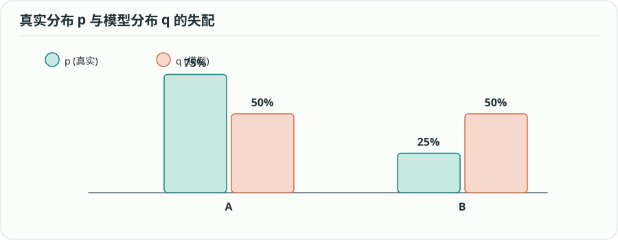
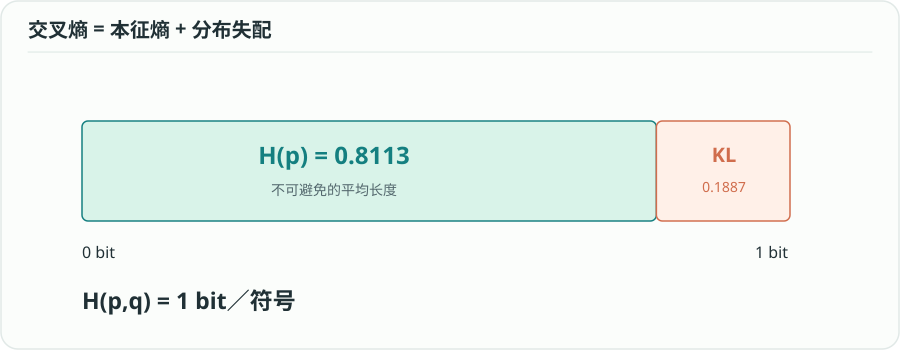

模型把常见事件误认为不常见，会怎样？
设真实分布 p=(0.75,0.25)，而模型分布 q=(0.5,0.5)。如果按真实分布设计编码，A 应比 B 更便宜；如果按模型 q 编码，两种消息却被赋予同样长度，平均需要更多 bits。这多出来的编码成本就是 KL 散度。

先定义相对熵，再讨论性质
对有限离散概率分布 p、q，如果 p 的正概率支持集包含在 q 的正概率支持集中，则 KL 散度定义为：
求和遍历所有事件；p(x)=0 项定义为 0。如果某个 p(x)>0 但 q(x)=0，则 D(p∥q)=+∞。这一点在机器学习中尤其重要：真实会出现的标签被模型分配零概率，会产生无穷大的负对数损失。
用二元分布算出多花的 0.1887 bit
真实分布 p=(0.75,0.25)，错误模型 q=(0.5,0.5)。真熵 H(p)≈0.8113 bits（按概率对 −log₂p(x) 求平均）。模型交叉熵 H(p,q)=1 bit，因为 q 为均匀分布，所有结果的模型负对数概率都是 1 bit。因此额外成本约 0.1887 bit/符号。

真实分布始终固定；当 q(A)=0.75 时 KL 达到零。
KL 非负，却不是几何距离
Gibbs 不等式保证 D(p∥q)≥0，且两个分布在相应支持上相同时取零。但通常 D(p∥q)≠D(q∥p)：它以第一个分布为真实采样权重，交换次序意味着改变了问题。
本例 D(p∥q)≈0.1887 bit，而 D(q∥p)≈0.2075 bit。反向值可从两项 ½log₂(2/3) 与 ½log₂(2) 的和得出。KL 因此不满足对称性，也不应把它当成满足三角不等式的度量距离。
为什么分类模型常用交叉熵损失？
在有标签监督分类中，模型给真实类别 y 的预测概率为 q(y|x)。如果训练目标是最大化条件似然，则最小化负对数似然 −log q(y|x)。对真实数据分布取平均时，这就是条件交叉熵；当真实目标分布固定时，最小化交叉熵也等价于最小化对模型的 KL 散度（相差一个与模型无关的真实熵）。
单个样本的 one-hot 目标让损失变成 −log q(y)，但训练中的经验平均并不是“自动知道真实分布”。标签噪声、校准误差、样本偏差、零概率输出与数值稳定性都是实现中必须解决的问题。若使用自然对数（nats），数值与以 2 为底的 bits 会按常数比例变化。
from math import log2
p = (.75, .25)
q = (.5, .5)
H = -sum(a*log2(a) for a in p)
cross = -sum(
a*log2(b)
for a,b in zip(p,q)
)
kl = sum(
a*log2(a/b)
for a,b in zip(p,q)
)
assert abs(cross-H-kl) < 1e-12
print([round(x,4) for x in (H,cross,kl)])边界与下一层问题
- 当模型某个 q(x)=0 而真实 p(x)>0，交叉熵与 KL 都发散。
- 实际深度学习中常用自然对数，损失单位是 nat；不应把数值直接当作 bit。
- KL 是对数比的期望，不是概率分布之间的欧氏距离；方向必须写清。
- 如果 p 本身也随优化参数改变，则最小化交叉熵与最小化 KL 未必只差常数，需要重新检查推导。
来源与延伸阅读
本章使用有限离散分布和以 2 为底的对数，除非另有说明。以下经典原始与教学资料可以用来核验定义、假设和推导。
- Claude E. Shannon, A Mathematical Theory of Communication (1948) — 通信系统与熵的原始框架。
- Cover & Thomas, Elements of Information Theory, Chapter 2 — 熵、互信息、KL、Jensen 与 DPI 的系统性推导。
- MIT 6.441 Information Theory 讲义 — 可供复核定义与不等式的大学课程材料。